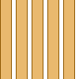

- java.lang.Object
-
- com.projetloki.genesis.image.Shapes
-
-
Method Summary
Methods Modifier and Type Method and Description static ShapediagonalStripes(int tileWidth, int tileHeight, double areaRatio, boolean topRight)Returns a shape made of an infinite sequence of parallel slanted stripes.static Shapeellipse(double x0, double y0, double width, double height)Returns a shape bounded by the given ellipse.static Shapeellipse(Point p0, double width, double height)Returns a shape bounded by the given ellipse.static Shapeempty()Returns a shape that does not contain any point.static ShapehalfPlane(Point p0, MathVector v)Returns the half-place on the right side of the given oriented line.static ShapehalfPlane(Point p0, Point p1)Returns the half-place on the right side of the given oriented line.static ShapehorizontalStripes(int tileHeight, int stripeHeight)Returns a shape made of an infinite sequence of horizontal stripes.static Shapeintersection(Iterable<? extends Shape> shapes)Intersects the given shapes.static Shapeintersection(Shape... shapes)Intersects the given shapes.static ShapeleftHalfPlane(double x0)Returns a shape that contains all the points P(x, y) which verify x <= x0static ShapelowerHalfPlane(double y0)Returns a shape that contains all the points P(x, y) which verify y >= y0static Shapeplane()Returns shape that contains all the points of the plane.static Shaperectangle(double x0, double y0, double width, double height)Returns a shape bounded by the rectangle with the given dimensions and top-left corner.static Shaperectangle(Point p0, double width, double height)Returns a shape bounded by the rectangle with the given dimensions and top-left corner.static ShaperightHalfPlane(double x0)Returns a shape that contains all the points P(x, y) which verify x >= x0static Shapeunion(Iterable<? extends Shape> shapes)Superimposes the given shapes.static Shapeunion(Shape... shapes)Superimposes the given shapes.static ShapeupperHalfPlane(double y0)Returns a shape that contains all the points P(x, y) which verify y <= y0static ShapeverticalStripes(int tileWidth, int stripeWidth)Returns a shape made of an infinite sequence of vertical stripes.
-
-
-
Method Detail
-
empty
public static Shape empty()
Returns a shape that does not contain any point. Equivalent of the empty set in the set theory.
-
plane
public static Shape plane()
Returns shape that contains all the points of the plane.
-
rectangle
public static Shape rectangle(Point p0, double width, double height)
Returns a shape bounded by the rectangle with the given dimensions and top-left corner.- Parameters:
p0- the top-left cornerwidth- the width of the rectangleheight- the height of the rectangle
-
rectangle
public static Shape rectangle(double x0, double y0, double width, double height)
Returns a shape bounded by the rectangle with the given dimensions and top-left corner.- Parameters:
x0- the x-coordinate of the top-left cornery0- the y-coordinate of the top-left cornerwidth- the width of the rectangleheight- the height of the rectangle
-
upperHalfPlane
public static Shape upperHalfPlane(double y0)
Returns a shape that contains all the points P(x, y) which verify y <= y0- Parameters:
y0- the y-coordinate of the points on the boundary
-
rightHalfPlane
public static Shape rightHalfPlane(double x0)
Returns a shape that contains all the points P(x, y) which verify x >= x0- Parameters:
x0- the x-coordinate of the points on the boundary
-
lowerHalfPlane
public static Shape lowerHalfPlane(double y0)
Returns a shape that contains all the points P(x, y) which verify y >= y0- Parameters:
y0- the y-coordinate of the points on the boundary
-
leftHalfPlane
public static Shape leftHalfPlane(double x0)
Returns a shape that contains all the points P(x, y) which verify x <= x0- Parameters:
x0- the x-coordinate of the points on the boundary
-
halfPlane
public static Shape halfPlane(Point p0, Point p1)
Returns the half-place on the right side of the given oriented line.- Parameters:
p0- a point on the linep1- a second point on the line, that defines the orientation of the line. It must be different from the first point.
-
halfPlane
public static Shape halfPlane(Point p0, MathVector v)
Returns the half-place on the right side of the given oriented line.- Parameters:
p0- a point on the linev- a vector that defines the direction and orientation of the line. It must not be the zero vector.
-
union
public static Shape union(Iterable<? extends Shape> shapes)
Superimposes the given shapes. The union contains a point P if at least one shape contain P.Shrinking an union is equivalent to shrinking the shapes in the union.
- Parameters:
shapes- the shapes in the union- Returns:
- the union of all the shapes
-
union
public static Shape union(Shape... shapes)
Superimposes the given shapes. The union contains a point P if at least one shape contain P.Shrinking an union is equivalent to shrinking the shapes in the union.
- Parameters:
shapes- the shapes in the union- Returns:
- the union of all the shapes
-
intersection
public static Shape intersection(Iterable<? extends Shape> shapes)
Intersects the given shapes. The intersection contains a point P if all the shapes contain P.Shrinking an intersection is equivalent to shrinking the shapes in the intersection.
- Parameters:
shapes- the shapes in the intersection- Returns:
- the intersection of all the shapes
-
intersection
public static Shape intersection(Shape... shapes)
Intersects the given shapes. The intersection contains a point P if all the shapes contain P.Shrinking an intersection is equivalent to shrinking the shapes in the intersection.
- Parameters:
shapes- the shapes in the intersection- Returns:
- the intersection of all the shapes
-
ellipse
public static Shape ellipse(Point p0, double width, double height)
Returns a shape bounded by the given ellipse. The ellipse is defined by a bounding rectangle.- Parameters:
p0- the top-left cornerwidth- the width of the rectangleheight- the height of the rectangle
-
ellipse
public static Shape ellipse(double x0, double y0, double width, double height)
Returns a shape bounded by the given ellipse. The ellipse is defined by a bounding rectangle.- Parameters:
x0- the x-coordinate of the top-left cornery0- the y-coordinate of the top-left cornerwidth- the width of the rectangleheight- the height of the rectangle
-
horizontalStripes
public static Shape horizontalStripes(int tileHeight, int stripeHeight)
Returns a shape made of an infinite sequence of horizontal stripes.
Shapes.horizontalStripes(20, 15)- Parameters:
tileHeight- the height of a horizontal tile. Equals the the height of a stripe plus the spacing between two stripes. Must be >= 1stripeHeight- the height of a stripe. Must be positive and <tileHeight
-
verticalStripes
public static Shape verticalStripes(int tileWidth, int stripeWidth)
Returns a shape made of an infinite sequence of vertical stripes. Shapes.verticalStripes(20, 15)- Parameters:
tileWidth- the width of a vertical tile. Equals the the width of a stripe plus the spacing between two stripes. Must be >= 1stripeWidth- the width of a stripe. Must be positive and <tileWidth
-
diagonalStripes
public static Shape diagonalStripes(int tileWidth, int tileHeight, double areaRatio, boolean topRight)
Returns a shape made of an infinite sequence of parallel slanted stripes. The surface in every tile is identical.Shapes.diagonalStripes(30, 20, 0.75, false)- Parameters:
tileWidth- the width of the tile. Must be >= 1tileHeight- the height of the tile. Must be >= 1areaRatio- the area ratio. Must be in [0, 1]topRight- whether the stripes are oriented bottom-left to top-right (true) or top-left to bottom-right (false)
-
-